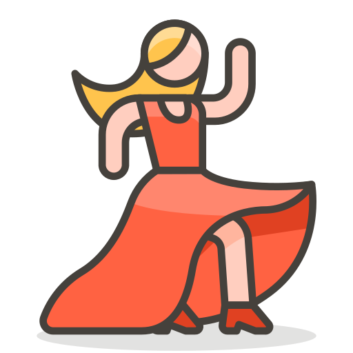
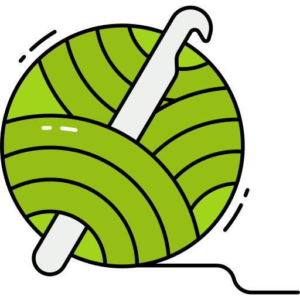
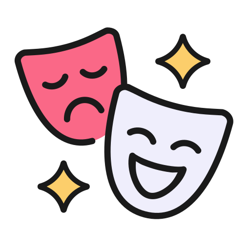

| Hobbies | Sub-Hobbies | Expecífico | Imagem |
| Desenho | Pintura com aquarela e rascunhos de lápis ou caneta. | Desenho de pessoas e criação de personagens. |
|
| Movimento | Aula de Street Dance e andar de patins. | Criar coreografias ou decorar alguma já feita + andar de patins com alguma amiga. |  |
| Música | Escutar música e tocar piano. | Apenas apreciar a melodia ou estudar a teoria musical + aulas de piano (pausadas no momento). |
|
| Manual | Miçangas e Crochet. | Criar pulseiras, colares e brincos com miçangas + criar chaveiros e pelucias de crochet. |  |
| Teatro | Aulas e apresentações. | (aula pausada no momento) + gostar de atuar e assistir peças. |  |
| Jogos | Computador ou Tabuleiro. | Assistir gameplays ou jogar jogos de computador e/ou online com amigos (ou sozinha) + tabuleiro obviamente com amigos. |
|
| Programar | Futuro trabalho | Era um hobbie...ou ainda é? |
|

Se você ainda não tem certeza, fique tranquilo(a)!
Clique no botão para ver mais sobre cada hobbie :D
Ir para a pŕoxima página
Voltar para a anterior
Voltar ao topo!